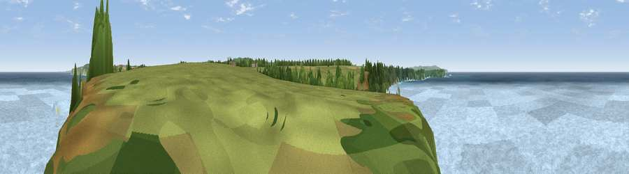

Viewpoint near Portreath
#10853 in England · top 24% of its area beats it · near PortreathThe view, rendered

A 360° render of this exact spot computed from the terrain model, tree cover and land cover — summer colours, afternoon light, calibrated against photographs of famous viewpoints. Real trees, hedges and buildings will differ in detail.
The panorama
Grey silhouette: terrain skyline in each direction (720 bearings, Earth curvature and refraction included). Dashed green: skyline with trees (+15 m) and buildings (+8 m) as obstacles. Blue strip: how far the ground is visible on each bearing.
Where the view opens
Wedge length = distance to the farthest visible ground on that bearing (vegetation-aware). Rings at 10, 25 and 50 km.
What fills the view
94% water · 5% grassland ·
Angular shares of the visible panorama (visual magnitude), not map area. Landscape diversity 0.11 (0–1 Shannon).
Key numbers
More beautiful places nearby
The staircase of upgrades: each row has a higher view potential than everything closer. Driving times are estimates from straight-line distance, calibrated against real road routing — check an actual route before setting out.
| Place | Direction | Drive | Score |
|---|---|---|---|
| Viewpoint near Portreath | SW · 2 km | ~6 min | 67.7 |
| Viewpoint near Brea | SSE · 6 km | ~12 min | 74.1 |
| Viewpoint near Illogan Highway | SE · 6 km | ~12 min | 75.8 |
| Carn Brea | SE · 6 km | ~13 min | 81.1 |
| St Agnes Beacon | NE · 8 km | ~17 min | 86.1 |
| Rosewall Hill | WSW · 17 km | ~29 min | 88.0 |
| Viewpoint near Combe Martin | NE · 140 km | ~164 min | 88.9 |
| Holdstone Hill | NE · 141 km | ~165 min | 90.2 |
50.25808, -5.30779 · source: screening · position refined by local search. Computed location — check access rights before visiting.